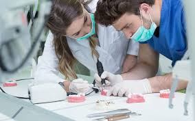
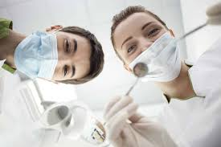
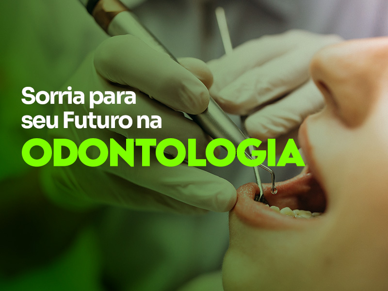
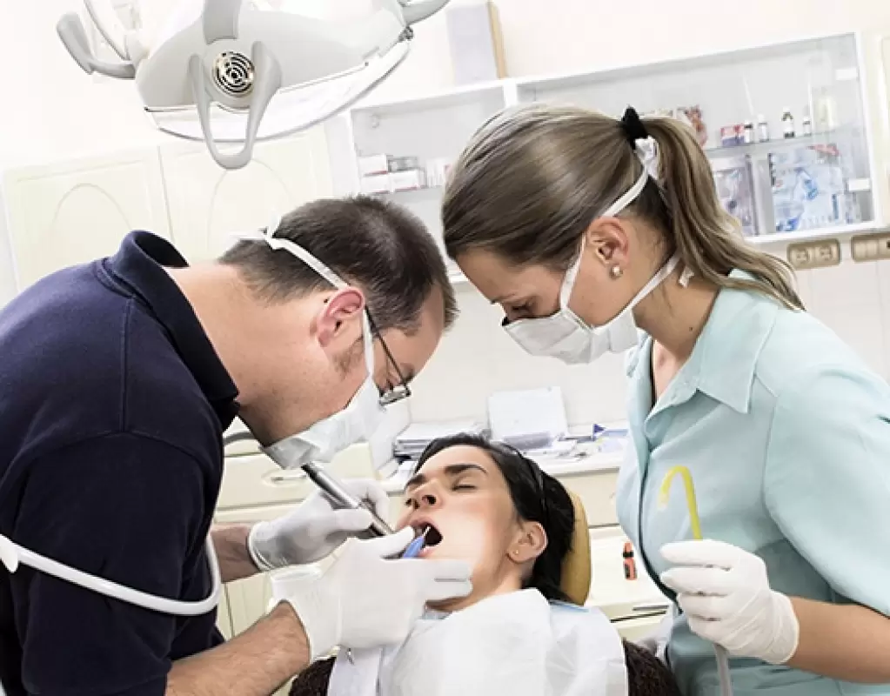
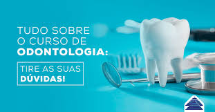

Vestibulinho para curso de Odontologia
O curso de odontologia é uma graduação na área da saúde que forma cirurgiões-dentistas, capacitando-os para a prevenção, diagnóstico e tratamento de doenças e condições relacionadas aos dentes, boca, gengiva e ossos da face.
O curso envolve tanto conhecimentos teóricos quanto práticos, com estágios em clínicas-escola e atendimento a pacientes reais.
Para seguir a carreira de odontologia, o primeiro passo é ingressar e concluir o curso de graduação em Odontologia, com duração média de 5 anos. O curso abrange disciplinas teóricas e práticas, incluindo laboratórios e clínicas, além de estágios supervisionados. É fundamental obter registro no Conselho Regional de Odontologia (CRO) para exercer a profissão.
O curso de Odontologia aborda diversas áreas, incluindo:
Ciências Biológicas: Anatomia, fisiologia, bioquímica, microbiologia e histologia.
Ciências da Saúde: Patologia, epidemiologia, imunologia e bioética.
Áreas Específicas da Odontologia: Ortodontia, periodontia, endodontia, prótese dentária, odontopediatria, cirurgia bucomaxilofacial e diagnóstico por imagem.
Práticas Clínicas: O curso inclui atividades práticas em laboratórios e clínicas, onde os alunos aprendem a diagnosticar e tratar diversas condições bucais, sob supervisão.
Legislação e Ética: Bioética e legislação odontológica são abordadas para garantir que o profissional aja de acordo com os princípios éticos da profissão.




